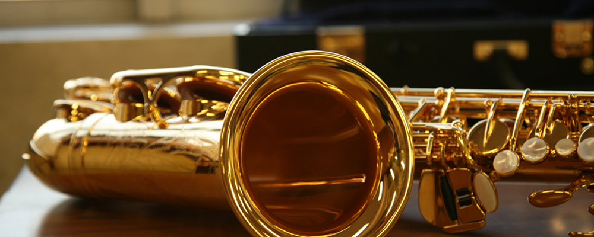

Saxophones 𝄞
The saxophone is a type of single-reed woodwind instrument with a conical body, usually made of brass. As with all single-reed instruments, sound is produced when a reed on a mouthpiece vibrates to produce a sound wave inside the instrument's body. The pitch is controlled by opening and closing holes in the body to change the effective length of the tube.The holes are closed by leather pads attached to keys operated by the player. Saxophones are made in various sizes and are almost always treated as transposing instruments. Saxophone players are called saxophonists.
Saxophones is the only brass woodwind instrument.The saxophone has always been made of brass since it was first invented. Because of the principles by which it produces sound, however, it is classified as a woodwind, much like the clarinet and flute.
The saxophone was invented by Adolphe Sax, a musical instrument designer born in Belgium who could play many wind instruments. His idea was to create an instrument that combined the best qualities of a woodwind instrument with the best qualities of a brass instrument.
Even though the saxophones was not well-recieved from the begining, it soon became one of the most iconic musical instrument. It is used in a wide range of musical styles including classical music (such as concert bands, chamber music, solo repertoire, and occasionally orchestras), military bands, marching bands, jazz (such as big bands and jazz combos), and contemporary music. The saxophone is also used as a solo and melody instrument or as a member of a horn section in some styles of rock and roll and popular music.